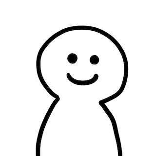

點擊任何地方開始使用麥克風
🎤 點擊開始語音檢測
VTuber準備好了！
開始使用麥克風
停止麥克風
測試麥克風設備
音量閾值:
5
平滑幀數:
10
(幀)
🎨 VTuber 背景設定
背景顏色：
重置
背景樣式：
純色
漸層
透明
漸層顏色：
不透明度：
100%
🎯 即時訓練模式
開始訓練模式
清除訓練資料
儲存訓練資料
載入訓練資料
待機中
按住按鈕並發出對應聲音，放開按鈕完成錄音：
A (啊)
E (欸)
I (咿)
O (喔)
U (嗚)
閉嘴
已訓練樣本：
0